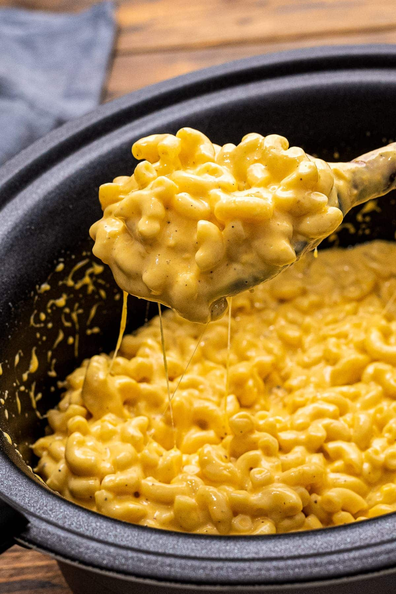

Slow Cooker Mac and Cheese

Description
If your family loves Mac and Cheese you have to try this easy Slow Cooker Mac and Cheese that is over the top creamy! Tender macaroni noodles smothered in a cheese sauce. It's the ultimate, classic comfort food. It's perfect for a holiday side dish, potluck or weeknight dinner.
Ingredients
- 2 cups uncooked elbow macaroni
- 4 tablespoons butter
- 2 1/2 cups grated sharp cheddar cheese
- 1/2 cup sour cream
- 1 can(10.5oz) condensed cheddar cheese soup
- 1/2 teaspoon salt
- 1 cup milk
- 1/2 teaspoon dry mustard
- 1/2 teaspoon black pepper
Instructions
- spray crock pot with non-stick cooking spray or use a liner
- in a saucepan boil the macaroni in water for six minutes, drain and rinse with cold water; you don't want to over cook this
- mix butter and cheese over medium high heat in a saucepan, stir until it melts
- in crock pot combine the cheese mixture, sour cream, soup, salt, milk, mustard, pepper, and cooked macaroni; stir to combine mixture
- cook in crock pot for 2 to 2 1/2 hours on low, stirring occasionally, just until it's hot; if you let it cook to long the noodles will turn to mush